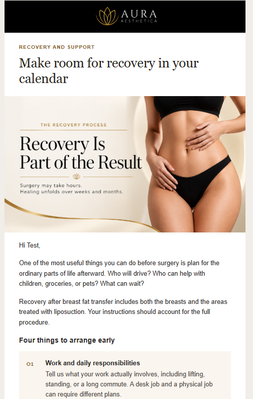
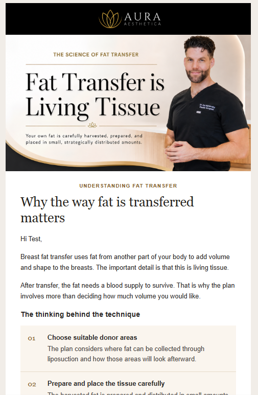
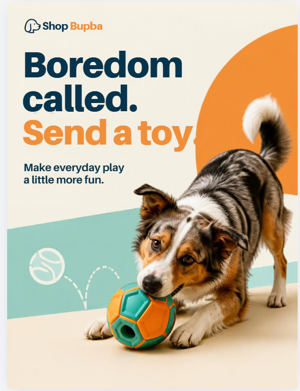
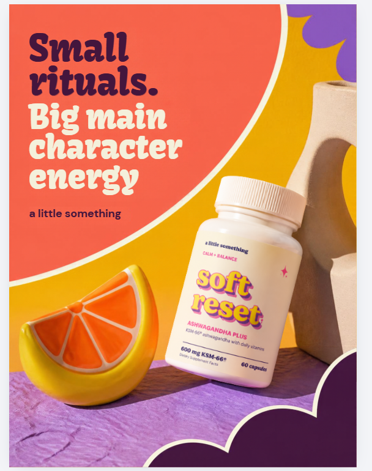
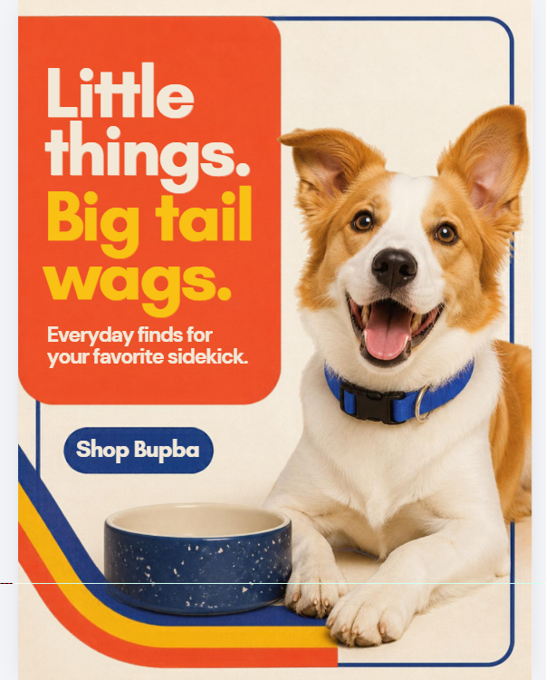

Administrative Support
Calendar coordination, documentation, task tracking, data organization, and day-to-day operational support.
PROFESSIONAL PORTFOLIO
I'm Alyssa Jane Rezada, an administrative support professional focused on keeping operations organized, communication clear, and day-to-day workflows moving.
ORGANIZED OPERATIONS
✳CLIENT-CENTERED COMMUNICATION
✳CONTINUOUS IMPROVEMENT
01 — ABOUT
I support teams by bringing structure to busy operations and making everyday processes easier to manage.
My work spans administrative coordination, patient communication, appointment workflows, CRM and lead follow-up, and digital marketing support. I value clear communication, dependable follow-through, and practical systems that help prevent important tasks from being missed.
This portfolio highlights selected areas of work and practical workflow examples. Confidential client and patient information is not displayed.
Get in touch ↗02 — EXPERIENCE
Organizations and teams associated with my professional experience:
Role titles, dates, and detailed responsibilities can be added once confirmed.
03 — CAPABILITIES
Calendar coordination, documentation, task tracking, data organization, and day-to-day operational support.
Appointment workflows, intake follow-ups, document collection, patient communication, and scheduling support.
Lead tracking, outreach sequences, follow-up processes, pipeline organization, and nurture workflows.
Professional phone, email, and text communication with a focus on clarity and timely follow-through.
Email campaign layouts, promotional content, Canva assets, and marketing coordination.
Google Workspace, spreadsheet tracking, process documentation, and workflow automation support.
04 — SELECTED WORK
Selected projects presented in a privacy-safe format. Screenshots and examples can be anonymized or recreated so no patient, customer, employer, or internal business information is exposed.
CRM · PROCESS DESIGN
Structured outreach stages, follow-up timing, and nurture steps designed to keep lead communication organized and consistent.
Workflow exampleADMINISTRATION · COORDINATION
A coordinated approach to appointment status, required documents, reminders, and follow-up tasks.
Operations exampleDIGITAL MARKETING · HTML DEVELOPMENT
Created HTML-based email campaigns using branded visuals, structured content, and clickable calls to action. Campaign links directed readers to relevant website pages, booking options, and contact actions. Canva assets were used to support the visual presentation.
Sanitized case studyGOOGLE APPS SCRIPT · SLACK AUTOMATION
Built a Google Apps Script workflow concept that checks selected calendar events and sends structured reminders to a Slack channel. The logic includes event filters, scheduled reminder timing, and duplicate-prevention rules to help a team follow up consistently.
Sanitized workflow case studyGRAPHIC DESIGN · CANVA · MARKETING
Created visual assets for promotional and social media use, including marketing graphics, branded layouts, and campaign materials. Designs can be presented as selected samples or recreated mockups with private client details removed.
Creative portfolioCAMPAIGN & DESIGN SAMPLES
Anonymized email campaign previews and promotional graphics. Clinic mastheads and test greetings have been removed, and identifying clinician details in the first sample have been obscured.





05 — CONTACT
For professional opportunities, collaborations, or questions, feel free to reach out.
Email me ↗